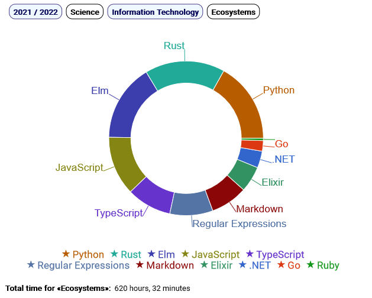

Most significant open source projects
-
JardineroJS: full-stack architecture for
linguistic analysis, written in
TypeScript for NodeJS and
orchestrating
12 NPM projects, with focus on:
- hyper-efficient, general-purpose NodeJS streams
- multi-threading, via encapsulated NodeJS workers
- messaging protocol between the reusable frontend and any backend - leveraging web sockets
- Jest coverage - mostly over 90%
- OmniCourse: React interactive chart library written in TypeScript - including parallelism via web workers
- Jardinero: the original full-stack, hybrid architecture in Python + TypeScript. Introduced on SpeakerDeck
- Solvenius: game written in purely functional style with Elm and packaged as a progressive web app
Preferred technologies
- TypeScript - from backend to frontend - with strong preference for React, advanced Node.js, and GraphQL
- C# 9+ on .NET 5 or later
- Python 3, when combined with type hints
- NoSQL - MongoDB, elements of Redis and DynamoDB
- SQL - mainly PostgreSQL, SQL Server, MySQL, SQLite
- Docker, with some knowledge of Kubernetes
Areas of interest
- Software architecture: fond of the whole tech stack, especially in the context of modern projects
- Research & Development - particularly in model simplification and performance optimization
- Continuous integration - solid experience with build tools and CI/CD pipelines, including hybrid tech stacks
- Advocate of code clarity and concept minimalism
- Mentoring, while continuously learning
- DevOps & Cloud design (but not open to on-call duty)
- Test design - from unit tests to browser automation, often coordinated by BDD via Gherkin
- Data Science - despite my still limited knowledge in this domain, I'm always eager to explore it more
- Agile processes: informal, friendly creativity with passion for quality, while retaining work-life balance
- 100%-remote positions only - with no mandatory travel
For more details, please visit my
LinkedIn profile
2022-09-07
Science
- Passionate software craftsman since 1999, when I was 12 years old; seeker of reusable, cross-tech patterns
- More than 7 years of experience with IT companies
- MSc and BSc in Computer Engineering - 110 cum laude
- Awarded as one of the 30 best Engineering students in Bologna, in 2016
- ~100 open source projects on GitHub (@giancosta86), in a variety of technologies - especially TypeScript, React, Sass, Elm, Python, Scala, Java, and Go - but also with some Prolog, Erlang, and more
- NPM packages: @giancosta86
- Python packages: giancosta86 on PyPI
- Linux user since 2004, but also Windows user
- Tech slides on SpeakerDeck: @giancosta86
Humanism
- Curious learner, passionate teacher
- C1 certificates in English (CAE, BEC Higher)
- C1 certificate in French (DALF)
- Constantly exploring Linguistics and new languages
- Proactive team player, focused on fostering interactions in remote teams with creativity
- Fond of Philosophy as a way to explore oneself and the cosmos - while honing the fine art of thinking
- Proudly supporting human rights and equality
- Award in a national Latin translation contest in 2003

This chart is a screenshot of the
interactive learning report
available on my website and rendered by
OmniCourse